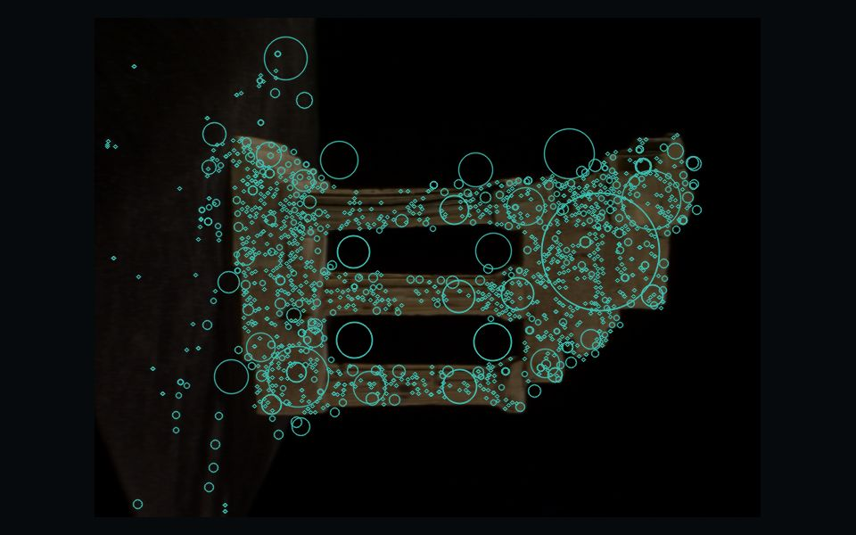
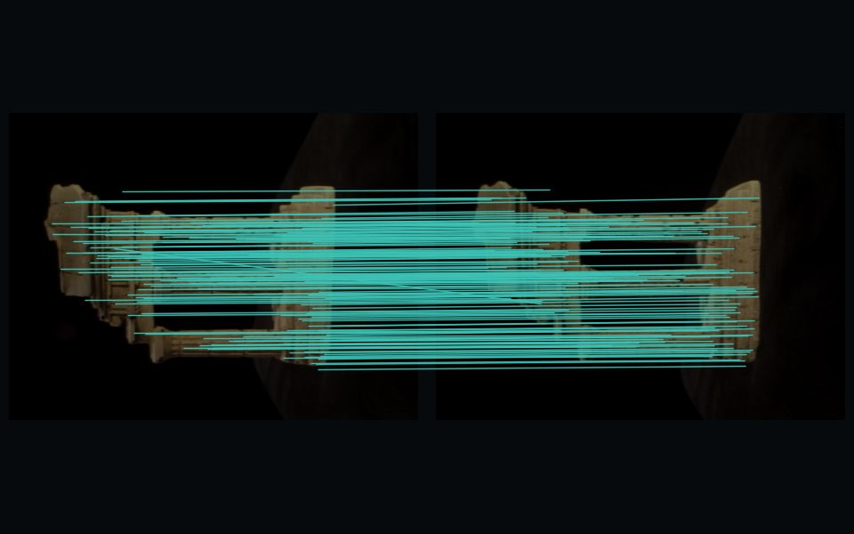
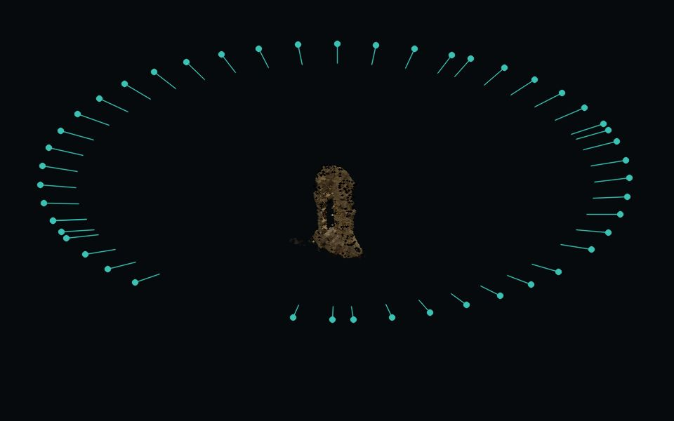
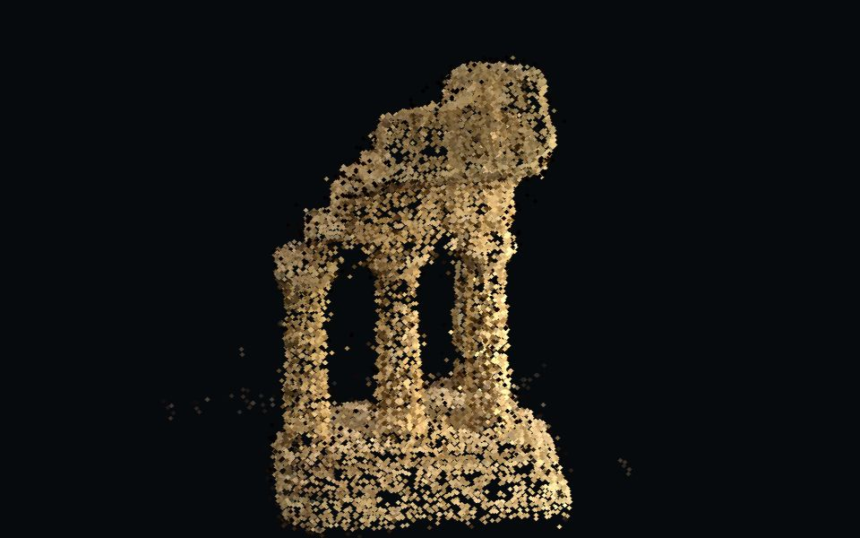

Multi-View 3D Reconstruction
Walk round an object with an ordinary camera and this project rebuilds it in three dimensions. A classical structure-from-motion pipeline, written from scratch in Python, finds the same points in many overlapping photos, works out where every photo was taken from, and triangulates those points into a coloured 3-D point cloud.
No depth sensor and no learned shortcut: only multi-view geometry, checked against benchmark ground truth and the reference system COLMAP (external).
- Cameras recovered
- 47 / 47
- Points
- 9 907
- Rotation error, median
- 0.15°
- Reprojection, median
- 0.13 px
How the temple is made
Five steps turn overlapping photos into a 3-D model. Every picture here is from the reconstruction at the top of the page: Middlebury's temple, a plaster copy of the Temple of the Dioskouroi in Agrigento, photographed 312 times from all round.
-
Photograph it from all round.

Every part of the object has to appear in several photos taken from different places, each overlapping its neighbours. These 312 photos cover a dome over the temple, ring above ring.
-
Find points worth following.

SIFT finds distinctive corners and blobs, column edges, cornices, chips in the plaster, and describes the texture round each with 128 numbers: 1 697 in this photo.
-
Match them across photos.

Each point is paired with its look-alike in other photos (Lowe's ratio test, both directions), then a robust fit of the essential matrix throws out pairs no single camera motion explains: 947 of 952 survive between these two neighbours.
-
Solve where every camera stood.

Two photos give the first relative pose and the first 3-D points. Every further camera is placed against the points it sees, and bundle adjustment refines all cameras and points together: 312 / 312 placed, a median 0.08° from the true cameras. Shown: one complete ring of them.
-
Build the point cloud.

Matched points are triangulated from the solved cameras; those seen in too few views or far from their neighbours are filtered out, leaving 24 121 coloured points: the model at the top, and live below.
The reconstruction, live
The same model to explore: drag to turn it, scroll to zoom, hover a camera to see how far it is from the true one. The ring shows one complete circle of the cameras; switch on all of them to see the whole dome.
How it is built
A pipeline of small stages, each tested against synthetic and rendered scenes with known cameras before it ever saw a real photo. The geometry is our own; OpenCV, SciPy and Open3D provide the numerical building blocks, labelled where they are used.
- Load and checkdecode, reject blur and duplicates, resolve intrinsicsours
- FeaturesSIFT, strict strongest-N cap, adaptive thresholdSIFT: OpenCV
- Matching2-NN, ratio test, mutual check, pair selection2-NN: OpenCV
- Verificationessential or fundamental matrix, Sampson inliers, refinementUSAC: OpenCV
- First pairpose from E, cheirality, triangulationours
- Incremental SfMtracks, next-best view, PnP, relative-pose fallbackPnP: OpenCV
- Bundle adjustmentexact sparse Jacobian, soft-L1, shared focal lengthsolver: SciPy
- Filter and exporttrack, reprojection and outlier filters; PLY, cameras, reportoutlier removal: Open3D
This page and the workstation
How well it works
Camera positions recovered from the photos alone, aligned to each benchmark's ground-truth cameras by a similarity transform. COLMAP, the reference structure-from-motion system, ran on the same images with the same starting calibration.
| Scene | Cameras | Rotation error median | Points | COLMAP (external) |
|---|---|---|---|---|
| Temple Middlebury, 312 photos (the model above) | 312 / 312 | 0.08° | 24 121 | not run |
| templeRing Middlebury, 47 photos | 47 / 47 | 0.15° | 9 907 | 47 / 47 · 0.26° |
| dinoRing Middlebury, dark, 48 photos | 48 / 48 | 0.15° | 3 462 | 24 / 48 · 23.4° |
| pipes ETH3D, 14 DSLR photos | 14 / 14 | 0.06° | – | 11 / 14 · 0.08° |
| office ETH3D, 26 photos, low texture | 26 / 26 | 0.14° | – | 26 / 26 · 0.24° |
| dinoSparseRing 16 widely spaced photos, learned features | 16 / 16 | 0.21° | – | 6 / 16 · 0.54° K fixed |
From the experiments in docs/experiments.md (E6, E7, E9). The last row uses the optional DISK + LightGlue features (external, via kornia); with SIFT that scene registers 6 of 16.
Measured on Middlebury TempletempleRingdinoRingdinoSparseRingETH3D pipesoffice
Bring your own photos.
Walk round an object, take twenty or more overlapping photos and drop them into the workstation. It runs on this machine; nothing is uploaded anywhere else.
python -m src.cli reconstruct data/raw/templeRing